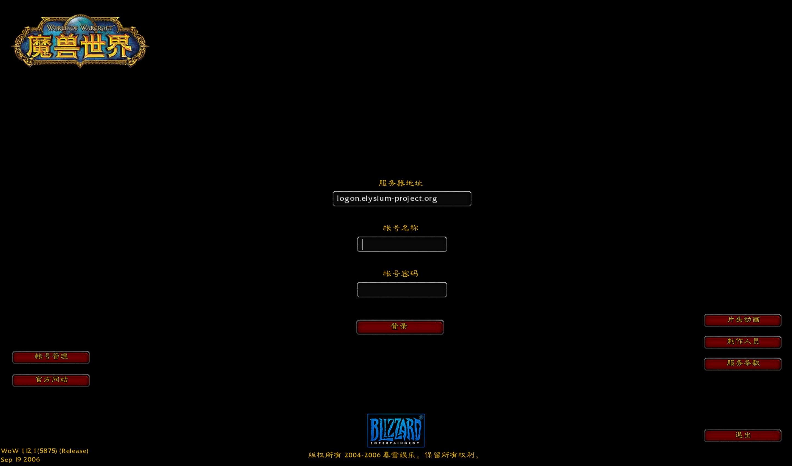
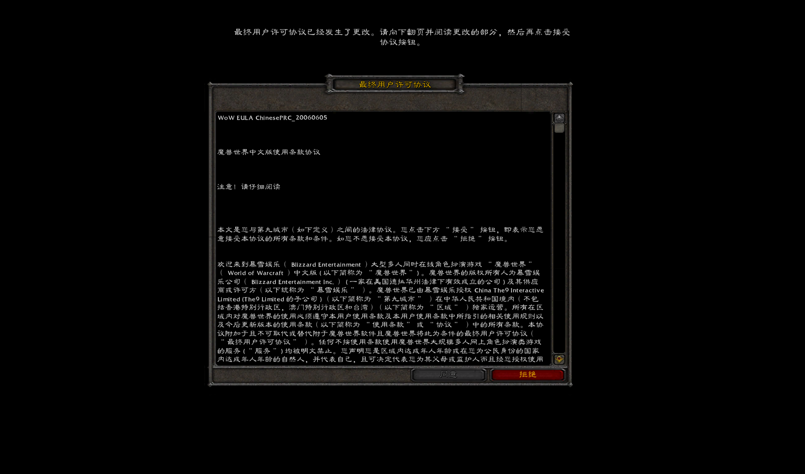

基于 Ghidra 对 WoW.exe 1.12.1（zhCN）的分析补全的界面加载功能，以及测试结果。
--glue 模式可以显示真实的登录界面：加载真实 GlueXML（37 个文件、770 个框体）时 0 个 Lua 错误，整个解决方案编译通过，54 个测试全部通过（含原有的 32 个）。

--accept-eula 时的登录屏。“服务器地址”框来自游戏目录下自定义的 Interface\GlueXML\ServerAddress.xml，内容取自 realmlist.wtf。
--accept-eula）时先显示 EULA，正文读自 MPQ 中的 Data\eula.html，可以用滚轮和滚动条按钮翻页。dotnet run --project src/Client -- --glue [--accept-eula] [--no-loose] [--data <Data 目录>]--accept-eula：视为已接受 EULA 和使用条款，直接进入登录屏。--no-loose：只读 MPQ，不叠加游戏目录下的散文件（与正版行为一致）。--frames N --screenshot file.bmp：渲染 N 帧后截图退出。NetCoreClient-GlueXML.log。| 阶段 | 函数 | 步骤 |
|---|---|---|
| Glue（登录界面） | FUN_0046a7b0 |
初始化 Lua（FUN_00703b80，内含 compat.lua）→ 注册 Glue API（FUN_0046abb0）→ 注册 26 个 Glue 事件（FUN_0046cc60）→ 签名校验（GlueXML.toc.sig，276 字节）→ 加载 TOC → 触发 FRAMES_LOADED → 切到 "login" 屏幕（SET_GLUE_SCREEN） |
| 游戏内 | FUN_0048fbf0 |
加载 Interface\FrameXML\FrameXML.toc → Bindings.xml → 各 AddOn（FUN_0051f600 / FUN_0051f240） |
FUN_006edb90）# 开头的行不算文件；## Key: Value 是元数据（Interface、Title、Notes、Dependencies 等，见 FUN_0051c9b0）。FUN_006ede10）.lua 文件直接执行，失败时记录 “Error loading %s”。Include file=：始终相对当前文件所在目录。Script file=：路径中不含 \ 时才按相对路径处理；内联脚本的 chunk 名为 文件名:<Scripts>。Font：进入字体表，必须有名字。virtual="true" 的注册为模板，重名时先注册的生效（“Virtual object named %s already exists”）；否则创建框体。FUN_006ee280 → FUN_00769820 → FUN_0076a2f0）parent 属性或模板的 parent。inherits 模板（递归 LoadXML）。FUN_00767800，支持 $parent）、各属性、Backdrop、HitRectInsets、Layers 和 Scripts。每个脚本单独编译为名为 “框体名:脚本名” 的 chunk。<Frames> 子框体（模板中的子框体在前）。子框体先运行 OnLoad，父框体后运行；父框体可见且尚未触发过 OnShow 时，再补一次 OnShow。this 设为当前框体，运行完恢复原值（FUN_00704d50）。FUN_007701c0）。inherits 先查字体对象、再查模板；text 属性优先查同名全局字符串（FUN_00703bf0）。警告文案与客户端日志原文一致，例如 “Couldn't find inherited node”、“Couldn't find relative frame”、“Unknown frame type”。
src/FrameXml 库| 文件 | 作用 |
|---|---|
TocFile.cs、UiPath.cs | TOC 解析与路径规范化 |
UiLoader.cs | TOC / XML / Lua 加载，框体与区域创建，尺寸、内边距、颜色、Backdrop、字体解析 |
UiScreen.cs | 具名对象表、模板、字体、事件分发（event/arg1..9）、布局、绘制顺序、鼠标与键盘输入、Glue 和 FrameXML 启动流程 |
Objects/*.cs | 约 20 种控件：Frame、Button、CheckButton、EditBox、Slider、StatusBar、ScrollFrame、SimpleHTML、MessageFrame、Model 系列、GameTooltip 等 |
Lua/LuaEngine.cs、Lua/Lua50Compat.cs | Lua 运行环境与 5.0 兼容层 |
Lua/LuaBindings.cs | Lua 侧每种对象的方法表（布尔值按 1.12 约定返回 1/nil） |
GlueApi.cs、CoreApi.cs | Glue 屏幕调用的约 120 个 C 函数，以及 CreateFrame 等通用函数；CVar 从 realmlist.wtf 和 WTF\Config.wtf 读取 |
AddOns.cs | AddOn 发现、依赖加载、版本检查 |
TextMarkup.cs | |cAARRGGBB 颜色码、|r、超链接等转义 |
引擎使用 MoonSharp（Lua 5.2）。加载前做一层词法转换，并补上 compat.lua 里的全局函数：
for k,v in 表 do 自动包装成迭代器。arg 表（含 arg.n）。goto 改名。\%、\[ 等转义去掉反斜杠。getn、tinsert、mod、strupper、角度制 sin/cos、getglobal 等。转换不增加换行，报错行号与原文件一致。
src/Client/GlueGame.cs：--glue 模式，负责加载界面，并把鼠标、滚轮和键盘事件转发给 UI。src/Client/Ui/GlueRenderer.cs：通过 ImGui 绘制 Backdrop（平铺背景加八段边框）、贴图（含纹理坐标和 ADD 混合近似）、文字（颜色码、阴影、描边、自动换行）、编辑框光标，以及滚动区域裁剪。字体使用 MPQ 中的方正字体，字形集合由界面实际用到的字符生成。全部位于 tests/Engine.Tests/FrameXmlTests.cs，结果：54 / 54 通过。
| 类别 | 覆盖内容 |
|---|---|
| 单元测试 | TOC 与路径解析、颜色码、Lua 5.0 兼容（迭代、arg、goto、转义、错误行号与 seterrorhandler）、Include/Script 相对路径、模板继承与 $parent、OnLoad 顺序、锚点计算、警告文案、事件、点击与输入、Lua 中的 CreateFrame |
| 真实数据 需要 Data/*.MPQ |
|
UnitName、GetItemQualityColor 这类依赖游戏状态的 C 函数，界面结构本身完整。需要等网络和世界状态接入后再补。Interface\GlueXML 改名为 .old（FUN_0051fb50），签名校验（FUN_006f10f0）也会拒绝修改过的 GlueXML。这里保留散文件优先、跳过签名校验，ServerAddress.xml 才能生效。要与正版完全一致，请使用 --no-loose。AccountLogin_OnShow 最终把焦点交给账号框。file 属性要补 Data\ 前缀，因为 MPQ 中实际存的是 Data\eula.html。GlueLocalization.lua 在 zhCN 下会将其隐藏。scan.html、contest.html、survey.html 在这份客户端的 MPQ 中不存在，日志里对应的 3 条警告反映的是真实数据情况。